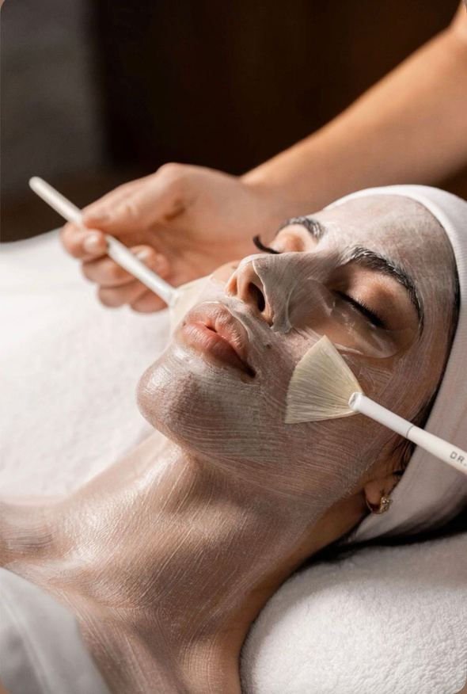

Início / Procedimentos / Limpeza de pele

Procedimento
Limpeza de pele.
Procedimento essencial para remover impurezas, controlar a oleosidade e melhorar a saúde da pele. Vai além da estética: prepara a pele para responder melhor a outros tratamentos e produtos.
Frequência indicadaa cada 30 a 45 dias
Sessãocerca de 60 min
Começa poravaliação
Indicado para
- Cravos (comedões)
- Oleosidade excessiva
- Poros obstruídos
- Textura irregular
- Acne leve
O que é feito
- Higienização profunda
- Esfoliação
- Extração de cravos
- Máscara calmante
- Finalização com ativos específicos
R$ 130,00no pagamento à vista.
Perguntas frequentes
Antes de agendar.
Com que frequência devo fazer?
A frequência indicada é a cada 30 a 45 dias.
Posso fazer junto com outros procedimentos?
A limpeza prepara a pele para responder melhor a outros tratamentos. A Dra. indica o melhor momento no seu plano.